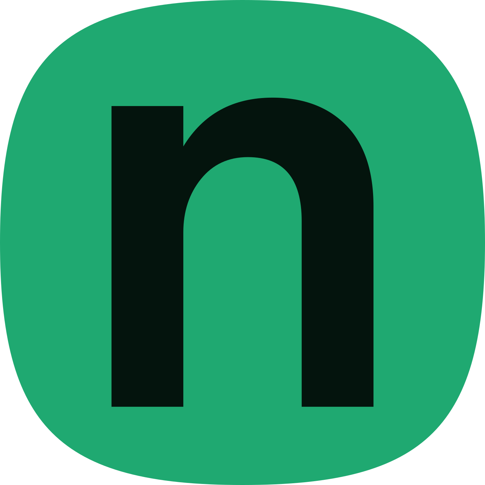
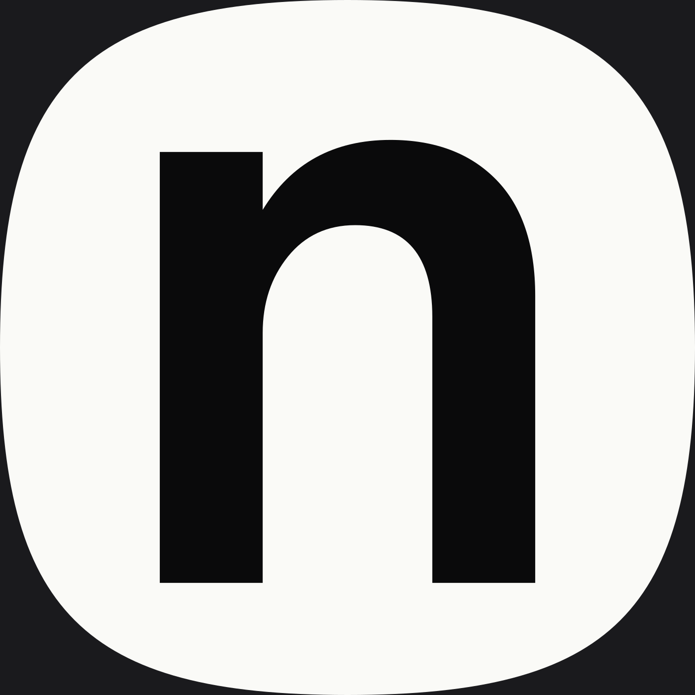
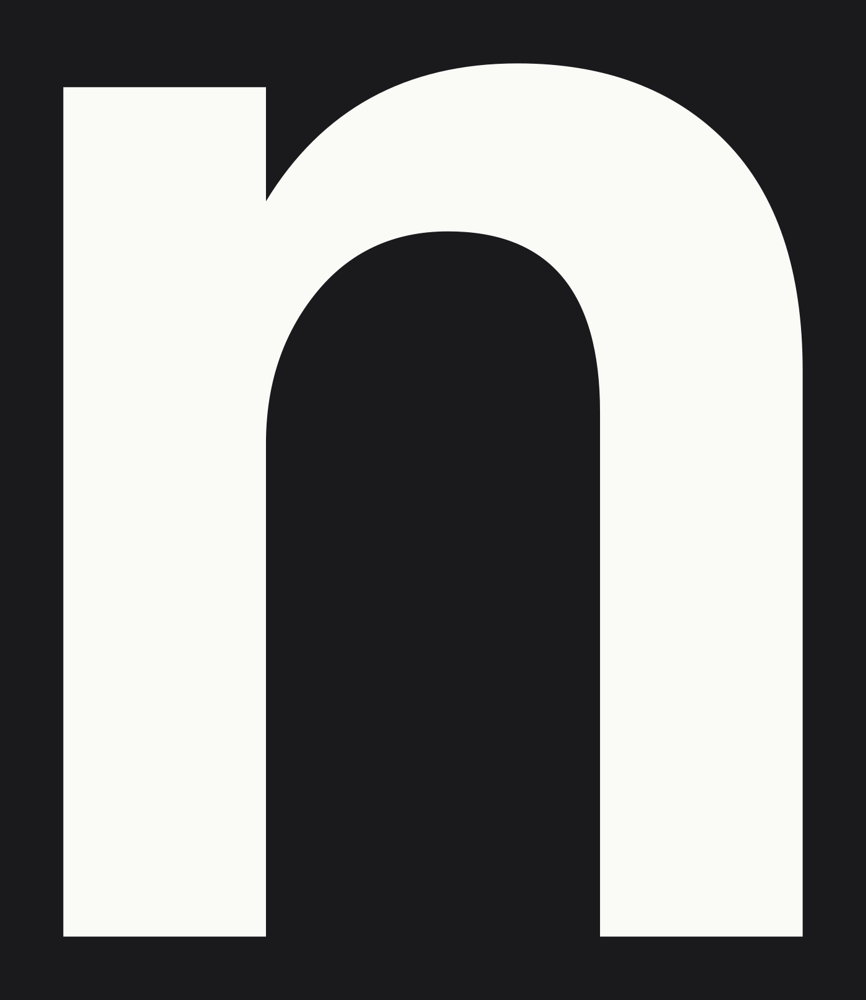
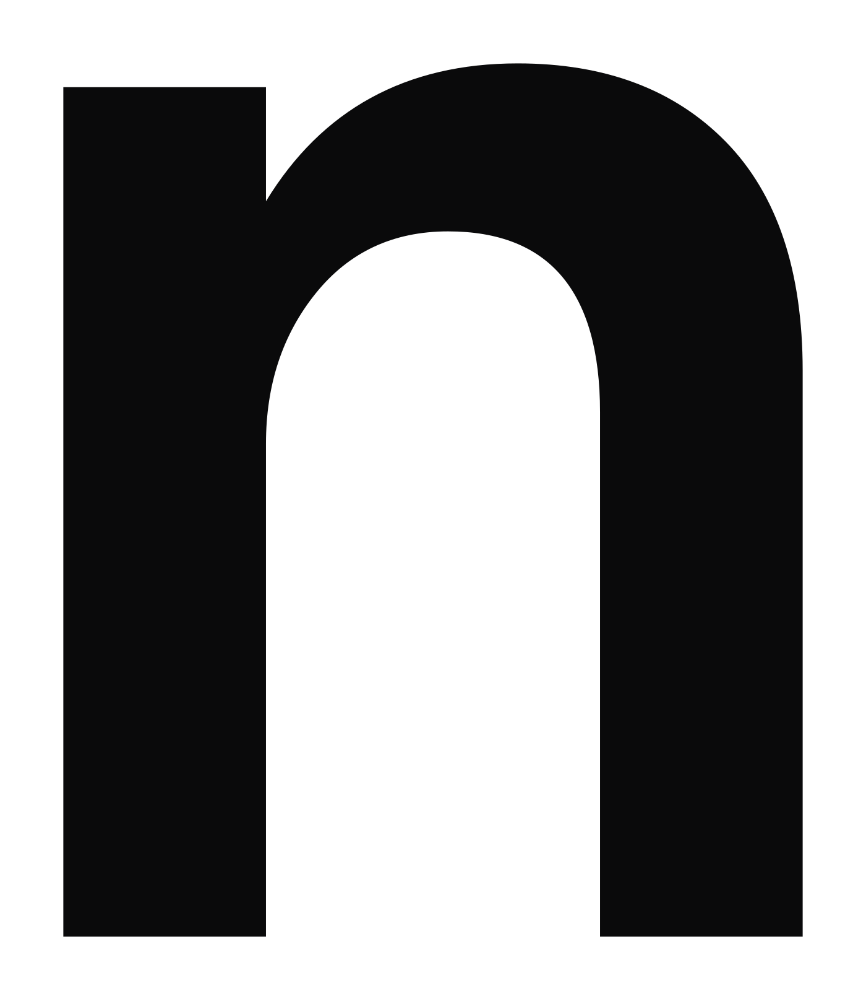
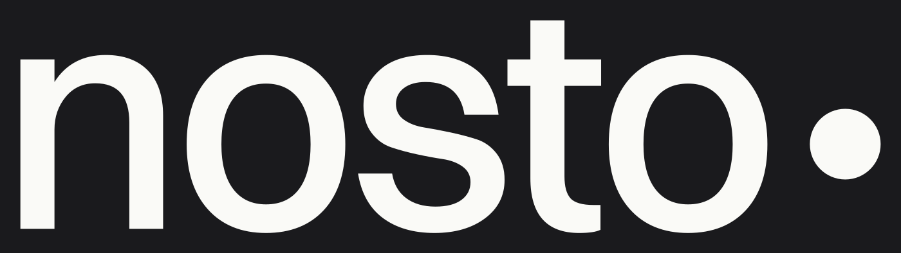
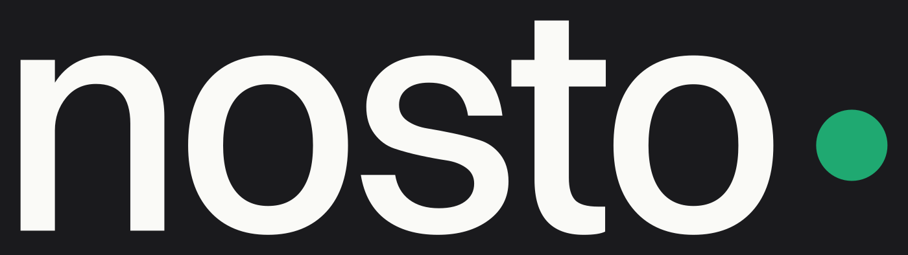
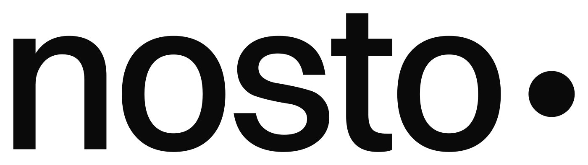
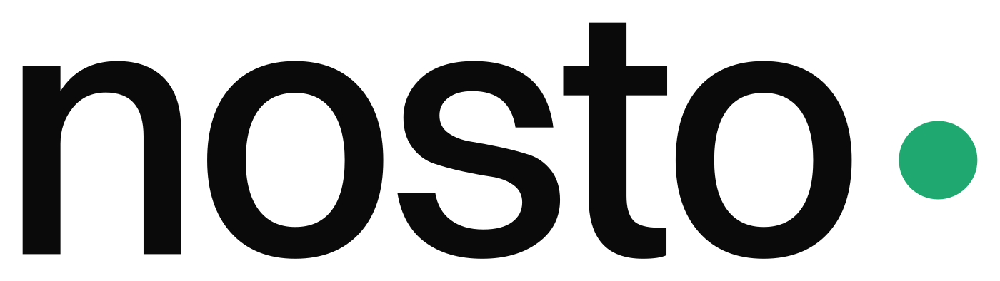

Certificados de autoría
Alex Flores Bertini / Nosto Estudios · Punta del Este, Uruguay









Cada obra tiene un manifiesto firmado y sellado en la cadena de bloques
de Bitcoin mediante OpenTimestamps. Los pasos para verificarlo sin depender de esta
página están en el VERIFICAR.md de cada obra. La clave pública para
verificar las firmas: clave-publica.asc.
Marca solicitada ante la DNPI (Uruguay), expediente 590460 en examen. Este registro acredita autoría declarada y anterioridad;
no otorga derechos de marca.